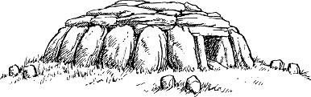

194
East of Javai, the highway passes through several small settlements where Chai farmers toil contentedly under the hot midsummer sun. By noon, these tiny hamlets have all but given way to a vast expanse of grassland that extends to the banks of the River Tkukoma, over a hundred miles distant.
It is nearing the middle of the afternoon when an unexpected misfortune befalls the column. The carriage bearing Xo-lin’s courtiers cracks a wheel rim, and the caravan is forced to halt while a repair is attempted. Bemoaning their plight, the courtiers disembark from their carriage and take shelter under a makeshift tent as Chan’s men begin work on the damaged wheel.
During this time, you scan the southern horizon, ever watchful for signs of enemy scouts. There is little to see out there on the grassy plain, but your eye is drawn to a mound of stones that rest atop a nearby hillock. When you magnify your vision, you recognize that this mound of sun-bleached stones is a yansi—an ancient Chai burial cairn.
{kind=link}

If you wish to explore this yansi while Chan’s men finish their work on the broken wheel, turn to 36.
If you choose instead to help them with their repairs, turn to 178.